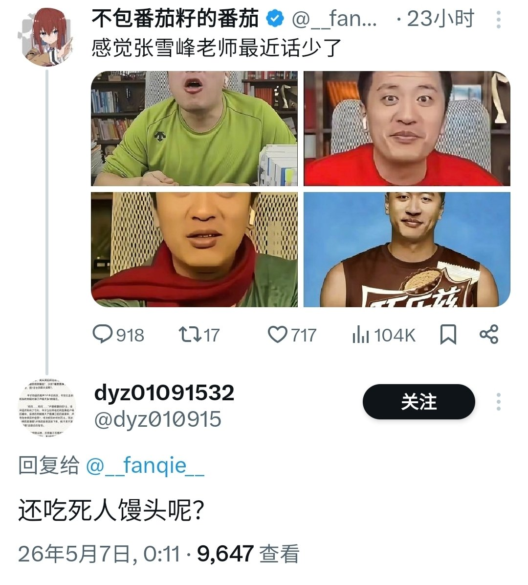
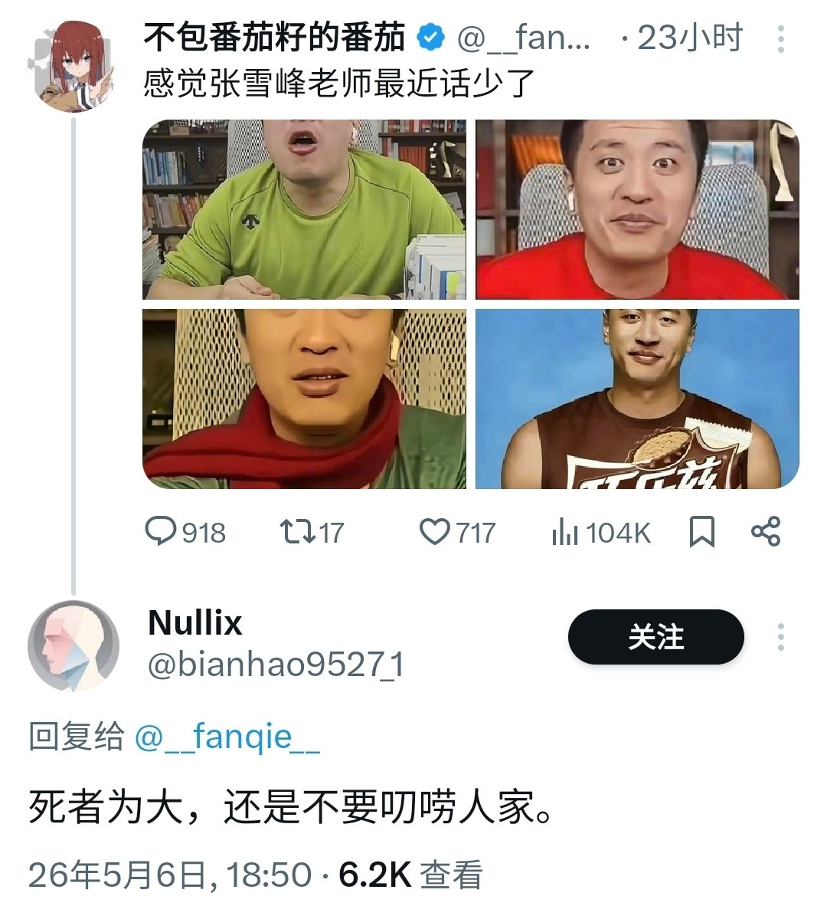
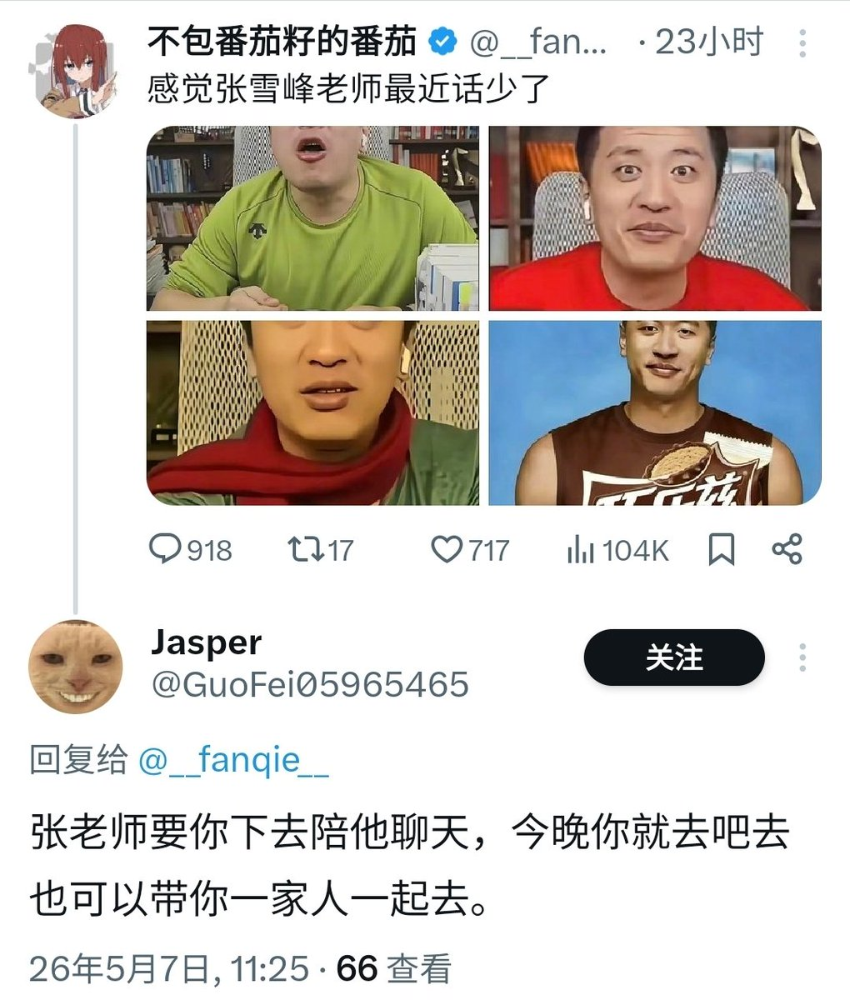

番茄包着番茄籽炒蛋
@bcfqdtfqz
@ZLINK243424 @moran_neko 不知道，可能他这帖子下面没刷怪，我的刷怪了



不包番茄籽的番茄
@__fanqie__
看到昨天评论区说张雪峰死者为大并且指责我吃死人流量的
这里我向郑州大学给排水专业毕业肄业的给穷人家孩子抹平信息差，最不势利眼，最无私奉献，最尊重普通百姓，最不贪财，最热情服务，巧乐兹三口一根，酷爱马拉松长跑的张雪峰老师表达我深深的歉意 https://t.co/1drC4F5v3l
可悲的Zeroくん🖕 ( ◠‿◠ )🖕
@ZLINK243424
@bcfqdtfqz @moran_neko 我记得张雪峰不是说猝死活该吗